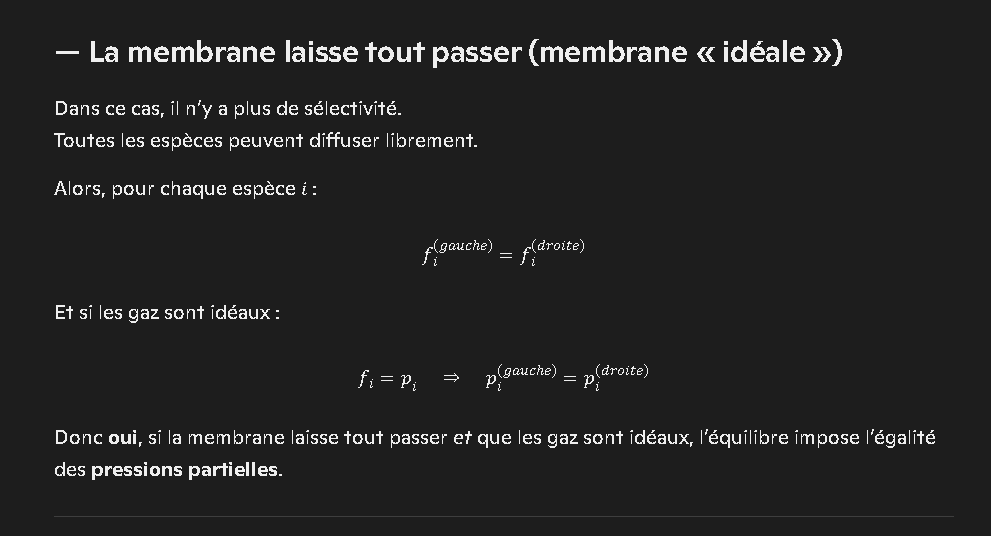
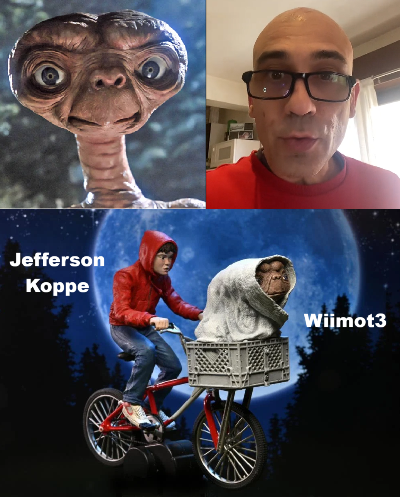

Guide
About
Introduction
I have created many programs and projects over the years, and I would like my work to be fairly valued. Since 1999, I have been working alone almost every day, often more than 12 hours, developing my own ideas and tools. Even though I have made significant progress in several domains and some of these advances are innovative, I'm totally invisible, I never win any cent, and never someone contact me for I got a job and start wining some money with my "precious" knowledges. And that is even though I tried everything in my power.
I was fired from my first job corresponding to my very long and very hard studies, while I was able to resolve — for the very first time in the world and with my own models I developped alone — derivation of all polynomial equations with a new method I found, all polynomial equations with a hand pen and all differential equations better than with CNP functions with a new mathematical hypothesis I found, all electrochemical potentials, define all diffusion coefficients of materials from diffusion profil, find the properties of 2 unknown constituents, all PVT and PVTX data of all fluids, PT traject of all fluid inclusions, solubilities of all constituents in all fluids, proove the equality of partial pressures from each side of a membrane, proove that any molecule pure in a closed system are stabilized at any temperature and any pressure, resolve all chemical reactions, synthetise easy any molecule at high temperature and pressure prooving the abiotic synthesis, find all properties of molecules, and define osmosis volumes.
I struggle to understand why, despite my efforts, I am often perceived negatively. I have great difficulty finding and keeping a job, and this situation has led to a lot of frustration and isolation. I dislike being judged or mocked, and I have often felt that some people trivialize effort while focusing mainly on status and appearances. At times, it seems that some prefer imitation over genuine work, and that they do not always apply to others the respect they expect for themselves. I have seen my work minimized, overlooked, or reused without acknowledgment, and this has deeply affected me. I sometimes feel that reality is distorted for convenience, that rumors spread easily, and that superficial achievements are celebrated more than serious, long-term effort.
Because of these experiences, I often prefer to work alone. It allows me to focus on my ideas without constant conflict or misunderstanding. I have rarely been invited to collaborate in a fair and balanced way, and I have sometimes been asked to work for free on projects that did not respect my contribution. I would like to be able to feel proud of my work and see it recognized, rather than feeling that my efforts are taken for granted. I have encountered situations where my discoveries seemed to be used without proper credit or compensation, and where my role was minimized. This has led me to be cautious and protective of my work.
Through this text about me and my work, I hope you will better understand what I am living, and why I do not consider myself a fool, even if I have sometimes felt treated as one. You may also better understand why I feel desperate, alone, and unemployed, despite working hard and obtaining strong results. I still do not fully know why I have not been able to earn money from my work: perhaps some people are skeptical, perhaps my ideas are difficult to understand, or perhaps they do not fit into existing structures. What I know is that my work is not intended to be free of charge, and that I have often felt exposed to abuse or harassment. I would never have imagined that working so intensely would change so little in my life. In this strange world, it sometimes seems that those who contribute the least are the ones who succeed the most, while those who give their best can remain ignored.
Chapter I: Studies
Never Respected Nowhere at Anytime
I carried out all my work alone, without real support. On several occasions, I was asked to contribute for free to derivative projects. My source code has been downloaded many times, yet I rarely receive feedback, contact, or visible appreciation. What I describe here reflects my daily reality as I perceive it. Whether you believe it or not, it is the experience I have lived from childhood to today. Talent cannot be bought, but it can be overlooked or misused, and sometimes those who handle it without care still end up being rewarded. That is often how the world feels to me. Even when I try to remain kind, generous, and focused on work, my life can feel like a struggle. I now hesitate to give my work freely to people who do not share information, do not respect my efforts, or do not acknowledge my contribution.
I have often felt surrounded by people who did not understand the value of the time and energy I invested. I have been asked to work without compensation, and I have sometimes received mockery or harsh words instead of recognition. I have felt that some did everything possible to make my life more difficult, and that my lack of material success was used against me. It is painful to see that those who do not necessarily create value for society can still succeed socially, while those who try to build and innovate may remain in the shadows.
My work and my efforts are often ignored. I sometimes feel that only automated systems, anonymous users, or opportunistic actors are interested in my projects, mainly to reuse them without proper credit. What I have developed took a long time to design, optimize, and write, at a time when few tools existed and nothing was straightforward. Today, some results may look simple, but they were not simple to obtain. It can be discouraging to see years of effort reduced to something that appears obvious in hindsight. I have met people more interested in climbing socially than in understanding the depth of the work. They may not see the blood, tears, and sweat behind each line of code or each idea. I have had to work much harder than most to try to overcome the labels others placed on me. Some expressions or nicknames used about me have been hurtful, and I do not appreciate being turned into a caricature.
At 38, I returned to school to try to find a job I would truly enjoy. I then had several positions that, on paper, matched my diploma, but in practice involved maintaining very old code bases with complex and fragile architectures. Clients were often handled by sales teams rather than developers, and my experience was mostly about debugging legacy applications. I spent up to three hours a day commuting by bus and train for a distance of only 15 kilometers, depending on delays and cancellations. The environment was difficult, and the salary did not reflect the years of study and effort. My life became a mix of solitude and repeated mockery, sometimes directly, sometimes indirectly, about my personal situation. I keep trying to find a job aligned with my skills, but it remains very challenging. Even in online spaces such as multiplayer games, I have sometimes felt recognized only to be targeted or harassed. While many people seem to have everything and contribute little, I often feel that I have little but try to contribute a lot. My research and discoveries have been rejected more than once, yet some still reuse my ideas with minor adjustments and present them as their own. I have had to protect my work and assert my copyrights, but even then, I have seen my contributions reused without proper acknowledgment. It can feel like watching others enjoy the cake while my name is quietly removed from the recipe.
I live alone in a very small apartment, yet the amount I am charged for basic housing costs feels more like what someone in a much larger place would pay. I am extremely careful with energy use and comfort, but the bills remain disproportionately high, leaving almost nothing for leisure or breathing room. On top of that, I am asked to contribute to building improvements that barely concern my own unit, since my façade is tiny and mostly made of windows, and the interior insulation does not even exist. Because everything is managed collectively rather than according to real individual needs, these expenses feel more like a burden placed on me for the benefit of others, without improving my situation in any meaningful way.
What's Going Around Goes Around
Over the years, I have created programs, websites, blogs, books, videos, posts, and repositories. Many people have visited or used these works, but often without visible recognition of my copyrights. I rarely receive direct contact, payment, or even simple signs of appreciation such as likes or subscriptions, even when I strive to deliver high-quality content. I believe some of my discoveries are genuinely interesting and could deserve significant recognition. Yet, I often feel that my name remains absent from discussions, while my ideas circulate. This is difficult to live with, especially when I feel that my mind and my work have been under pressure for many years.
I am tired of feeling constantly overlooked or reused without acknowledgment. Working alone for free while being ignored is not sustainable. I believe that what I have found and developed should not be quietly absorbed by others without proper credit or compensation. Anyone using my work should respect my rights and pay me when appropriate. I do not accept that my efforts or my mental well-being be treated as expendable.
I have strong convictions in several domains, and I believe my work has value. There is no reason for anyone to insult me or shout at me because of my ideas or my situation. I deserve respect, and so do my copyrights. I do not deserve to be ignored or to see my work reused without acknowledgment. My programs and projects are the result of years of effort, and I would like them to be seen as such. Even when I was working on topics like the origin of life, high-pressure chemistry, and equations of state, my path was interrupted and I was dismissed from my university. This experience has marked me deeply.
My Heavy Past
In 2009, I worked on the synthesis of Acridine Orange at high temperature and pressure, using my own equation of state model to describe PVTX behavior of fluids and reactions. I published one article on the stability of adenine at 300°C and 500 bar, but my broader research was interrupted when I was dismissed from the laboratory where I was working. During that time, misunderstandings and accusations arose about missing materials and equipment, and I found myself excluded without fully understanding why. Acridine Orange is a molecule that interested me greatly in the context of prebiotic chemistry, and I believed my work had potential. However, I was unable to complete all the planned analyses, and some instruments became unavailable. Since 2010, I have mainly focused on gaming controllers and audio tools, trying to move forward with what I could control.
I also worked on thermodynamic modeling, including the behavior of hydrogen diffusing through membranes into high-pressure autoclaves containing argon. My interpretation differed from that of some established researchers, particularly regarding fugacity and partial pressures. In my view, the total pressure is the sum of partial pressures from molecular fractions, and fugacity is a calculated measure of reactivity rather than a directly measurable quantity. I presented these ideas in my thesis, including calculations showing how argon pressure could increase due to reduced available space. These disagreements led to strong scientific debates, and at one point, my thesis was at risk of being refused. I had calculated diffusion coefficients for membranes based on diffusion profiles, and I believed my model was consistent with many experimental data sets. Nonetheless, my approach did not align with certain classical interpretations, and this created tension.
On the day I left the laboratory in 2011, I saw my research being printed and kept, even though I was not in a position to publish it myself. I had several potential articles in preparation, but I was never paid for this work, and nothing was submitted to scientific journals under my name. From that time on, little has changed in terms of recognition. Some researchers with strong reputations disagreed with my models based on specific diagrams or measurements, even when my results matched other data sets. I felt that my broader theoretical framework was not fully considered, and that my contributions were underestimated. This has remained a source of frustration.
In one case, my equation of state model was judged incorrect because it did not reproduce a particular published modelization for a mixture, even though it matched pure component data and many other experimental PVTX measurements. My supervisor told me that I would not obtain my doctorate unless I could rebuild certain existing modelizations exactly. I had already developed my own model, implemented it in several programming languages, and obtained good fits to experimental data. Despite this, I ended up feeling discarded, without support, income, or stability. Fortunately, my family was there for me. These experiences have left me with a complex relationship to academic research and its structures.
Effort Made Recognition Missing
I have tried several times to rejoin a laboratory to continue my research and publish my discoveries. Each time, questions were raised about my previous supervisors, and doors closed before I could present my work fully. I still do not understand why my discoveries were set aside before anyone truly examined them. Meanwhile, important decisions are made about topics such as radioactive waste storage in complex geological settings, sometimes without detailed consideration of fluid thermodynamics. I wrote and shared my findings to try to contribute to these discussions.
Below is an email I sent as a proposal for scientific collaboration:
Subject: Proposal for Scientific Collaboration to Promote Research Work
Dear Sir or Madam,
I am reaching out to inquire about your interest in a scientific collaboration aimed at
publishing research
I conducted during my doctoral thesis, defended in 2011, but which unfortunately remained
unpublished due to
scientific disagreements with my supervisors.
My research focuses on gas thermodynamics and chemical equilibrium modeling. In 2008, I
published a paper
on the stability of adenine at high temperatures and under controlled pressure. Subsequently, I
developed an
original model based on a modification of the Redlich-Kwong equation of state, which yields
excellent
results on PVTX data for gas mixtures. I also designed an automatic chemical reaction balancing
tool.
Thanks to this work, I was able to synthesize prebiotic molecules such as acridine orange,
which, in pure
concentration, promotes DNA formation. It is the most reduced molecule among C-H-O-N type
compounds.
Unfortunately, these results were neither included in my thesis nor published, due to scientific
disagreements with my supervisors.
I also developed a model to calculate hydrogen diffusion coefficients through semi-permeable
membranes,
based on diffusion profiles. This work was partially included in my thesis, but again, a
disagreement arose
regarding the thermodynamic interpretation of fugacities or partial pressures on either side of
the
semi-permeable membranes.
My calculations, based on my equation of state model, show results consistent with all
experimental data
(notably those of Presnall and Kennedy), but diverge from certain classical interpretations
(Shaw and Bruno).
These divergences led to the termination of my collaboration with the laboratory, with no
possibility of
publication, although my work was retained and printed by my former supervisors.
The most significant disagreement lies in a thermodynamic principle based on fugacity
calculations using my
equation of state model, compared to the authors’ measurements. Presnall, in an earlier paper,
provides
hydrogen fugacities and states that fugacity is a measurable reactivity through chemical
reaction studies.
Shaw discusses fugacity equality across semi-permeable membranes, Bruno measures them. My
calculations show
similarities, but another author obtains different results. This also applies to the hydrogen
line
displacing argon, for which I determined hydrogen diffusion coefficients.
Regarding the thermodynamic principle, their view is that hydrogen diffusing at 10 bars has a
fugacity of
10 bars, whether alone or accompanied by argon (which does not cross the membrane), because they
claim
fugacity equality on both sides of the membrane. Argon is at 500 bars, and hydrogen, according
to them, at
13 bars, since the total pressure rose to 513 bars after diffusion. Thus, they claim 500 bars of
argon,
13 bars of hydrogen, and a hydrogen fugacity of 10 bars, because before the membrane, hydrogen
is alone at
10 bars. The fugacity coefficient would therefore be less than 1 for hydrogen mixed with argon:
fugacity
being equal to partial pressure multiplied by the fugacity coefficient, i.e., 10 = 13 × 0.7.
However, my equation of state model calculates a fugacity coefficient greater than 1, which is
consistent
with known gas data. It is often greater than 1. Moreover, as shown in a short paragraph of my
thesis, argon
has less space: I recalculated argon pressure rising from 500 to 503 bars, and hydrogen remained
at 10 bars,
for a total pressure of 513 bars. I disagree with this thermodynamic principle where fugacities
are treated
as directly measurable, hence the disagreement. I have worked extensively on my models from 2006
to the
present, and have already highlighted many findings.
Today, I am eager to resume this research and submit it to reputable scientific journals. I am
convinced of
its relevance and its potential for innovation in the fields of thermodynamics and prebiotic
chemistry.
I would be very grateful if you would consider this proposal for collaboration. I am available
to share all
my work and discuss publication opportunities.
I look forward to your response and remain, sincerely yours,
Michaël Franiatte
I later sent a follow-up email:
Subject: Follow-up – Scientific Collaboration Proposal
Dear Sir or Madam,
I am following up on my previous message regarding a proposal for scientific collaboration based
on my
research in gas thermodynamics and chemical equilibrium modeling.
As I have not yet received a response, I wanted to ensure that my message reached you and
reiterate my
strong interest in a potential collaboration.
Searchers Get AI Mad: 1000 Calculations My Ass

Amazing Searcher on Gas
Chapter II: Jobs
Forcing is Easy, Learning is Difficult
In an ideal world, web development would rely on clear object structures, a single database connection initialized once, and a neat admin page to configure credentials. But reality enjoys being creative: arbitrary static declarations, objects spawned like fireworks, and “static” variables used as if they were magical global potions. With a bit of imagination, you could even build an encrypted admin page to send credentials safely — but imagination is optional in many projects.
Some developers prefer writing visitor counters into files rather than using a simple static variable. Others create entire classes just to store what could be a tiny JSON object. The result? Data mixing, unpredictable behavior, and side effects that could make a chemistry lab jealous. Many dynamic websites behave like shared notebooks where everyone writes on the same page at the same time.
Only a handful of people know that Git can show the history of a single file, or that formatting HTML properly is not a crime but an optimization. Ask around — you will quickly see who is passionate and who simply presses keys. Even basic concepts like private variables, constants, or understanding the cost of a single line of code can become philosophical debates. For instance, retrieving the length of an array repeatedly is a tiny unoptimization, but it often becomes a hill people are willing to die on.
Databases are powerful but expensive tools. They shine when users need real-time shared data — social networks, collaborative documents, e-commerce. Otherwise, simpler solutions like SQLite, local storage, or plain files are perfectly fine. Privacy-friendly, lightweight, and efficient. But simplicity is often underrated.
Even the difference between let and var in JavaScript can become a mystery, despite being taught everywhere. Iterating through collections sometimes looks like deciphering ancient scripts. Many tutorials online teach only fragments, and some courses skip essential principles entirely — static variables, clean architecture, or even proper Git usage.
I learned differently: by searching, experimenting, and rebuilding everything from scratch. A heavy client program behaves like a server, while a server-side web application must be fully object-oriented because only one instance runs. If you don’t instantiate objects properly, data from different users merges like paint on a wet canvas. Static variables inside classes? They can create delightful surprises if misused.
Many programs in the world are coded with enthusiasm rather than structure. Add multiple contributors, libraries with vulnerabilities, design patterns applied “because it’s cool,” and databases overflowing with tables and columns — and you get masterpieces of complexity. Frontends lag, backends crawl, and simple features require heroic debugging sessions. Sometimes functions reach 6000 lines, projects are nested inside other projects, and referencing them feels like archaeology.
Some developers struggle for weeks on issues that require two seconds of clarity. Cleaning code is often seen as an act of rebellion. Many believe talent is rare, or already hired elsewhere. Others simply do not realize how difficult it is for someone experienced to navigate codebases built without structure.
Design patterns become training wheels, frameworks multiply like mushrooms, and originality is often replaced by repetition. When someone creates their own framework, the result can be… surprising. And copyrighted content sometimes travels freely online without attribution, as if authorship were optional.
Developers often fear code reviews, hesitate to accept improvements, and prefer maintaining old habits. They avoid duplication but create regressions, avoid architecture but create chaos, avoid discussions but create misunderstandings. Some even believe circular references are unavoidable, unaware that triangular references exist.
Codebases become overgrown forests: too many pages, too many lines, too few comments. Projects link to other projects inside the same folder, making portability a myth. Time tracking becomes an obsession, down to the minute, as if creativity followed a stopwatch.
Logical operators become philosophical topics. For example, && is often used without considering whether both conditions should be evaluated. || becomes misunderstood. Optimization becomes folklore. Architecture becomes improvisation. SQL requests multiply instead of being structured. Entity classes are reinvented repeatedly. And duplicate code becomes taboo, even when it would reduce bugs.
Advice from project leaders can be… imaginative. JavaScript variables declared with let instead of var to avoid duplication errors, instead of simply choosing meaningful names. Try/catch becomes controversial, even though it is essential in many cases. Some prefer relying only on their own libraries, avoiding third-party tools entirely.
In some environments, writing a line of C code without brackets after a condition is forbidden, as if simplicity were dangerous. Learning a programming language is like learning a foreign language: at first, you write like Shakespeare, then you simplify as you gain experience.
Bad architecture consumes time for both developers and clients. The first idea is often chosen, even when it should not be. Copy/paste becomes tradition. Communication becomes optional. Anti-social behavior becomes normal. Students are given entire applications to build from scratch, repeating the same mistakes. Self-taught developers sometimes produce unreadable code, full of patterns used for the sake of patterns.
True developers prefer small, modular applications with clear architecture, multiple databases, and maintainable code. But many environments resist change. Some developers use Sleep(1000) to fix timing issues. Others laugh when you mention caching or code jumps. Experience varies widely.
People can be opportunistic: kind when they need something, distant once they have it. Gratitude is rare. Expectations are high. And when you give too much, some may forget you entirely once they benefit from your work. Staying cautious is essential.
Working is Easy, Doing is Difficult
Remote work sounds wonderful on paper, but in practice it often feels like trying to work in a theme park: distractions everywhere, productivity nowhere, and job offers evaporating as fast as motivation. When you genuinely try to give your best, you quickly learn that generosity can be expensive — especially when some people have a very flexible definition of “respect.” Responding to unfairness with calm logic is ideal, but sometimes a firm counter‑argument is the only language that gets understood.
Teamwork in some companies can resemble synchronized solitude: everyone coding alone on their tiny island, following the same questionable patterns, and politely avoiding any discussion about improving the process. Suggesting a change to the custom framework? Forbidden. Proposing a better architecture? Unthinkable. Requesting clarity? Revolutionary. You quickly become “the new one who asks too many questions,” even when the questions are the only things keeping the ship afloat.
Databases are powerful tools, but they are not magical potions. They shine when users need real‑time shared data — social networks, collaborative documents, e‑commerce. Otherwise, simpler solutions like SQLite, local storage, or plain files are perfectly fine. Lightweight, privacy‑friendly, and efficient. But simplicity is often misunderstood as weakness.
Only a few developers know that Git can show the history of a single file, or that formatting HTML properly is not a luxury but an optimization. Ask around — you will quickly see who genuinely loves the craft and who simply presses keys. Even basic concepts like private variables, constants, or understanding memory usage can become philosophical debates worthy of a coffee break.
Web applications should ideally rely on clear object structures and a single database connection initialized once. But reality enjoys improvisation: arbitrary static declarations, objects created like fireworks, and “static” variables used as if they were global spells. With a bit of imagination, you could even build an encrypted admin page to send credentials safely — imagination being optional in many projects.
I’ve seen people use controller scripts believing they were performing miracles, when in fact the heavy lifting was done by SteamInput or the game itself. Online platforms are full of reused content without attribution, as if authorship were optional. When you create something simple, it attracts beginners; when you create something advanced, it inspires imitation. Frameworks multiply like mushrooms, libraries grow to 100 pages for what could be two lines, and every day a new “revolutionary” tool appears.
Web is simple: a model, a controller, a view. CRUD operations. Yet many prefer turning simplicity into labyrinths. They sign assemblies even when the project is open source, duplicate lines instead of projects, and complicate what should be straightforward. Even with assistance, some habits never change.
Criticism is often unwelcome. Improvement is suspicious. Discussions are avoided. Some prefer reshaping reality rather than adjusting their code. They talk only with those they admire or those who admire them. Recognition becomes currency, and constructive feedback becomes taboo. In such environments, staying discreet is sometimes the best strategy to avoid being quietly sidelined.
You can often tell how a website is built by simply resizing the browser window: if scrolling feels like dragging a piano uphill, something went wrong. Yet some tutorials online teach coding while their own websites struggle to display a static page without overheating your computer.
Legacy applications can be fascinating archaeological sites: VB6 functions with thousands of lines, circular references between solutions, uncommented code, missing documentation, and architectures that defy gravity. Team leaders sometimes rely solely on newcomers with fresh diplomas, while experienced developers are not consulted. Backends and frontends share the same server, public networks carry sensitive data, and requests multiply unnecessarily.
Some environments feel like school playgrounds: experts are not allowed to improve anything, and newcomers are given entire applications to build from scratch, repeating the same mistakes. Self‑taught developers sometimes produce unreadable code, full of patterns used for the sake of patterns, rather than clarity.
True developers prefer small, modular applications with clear architecture, multiple databases, and maintainable code. But many environments resist change. Some fix timing issues with Sleep(1000). Others laugh when you mention caching or code jumps. Experience varies widely.
People can be opportunistic: kind when they need something, distant once they have it. Gratitude is rare. Expectations are high. And when you give too much, some may forget you entirely once they benefit from your work. Staying cautious is essential — especially when your efforts are quietly reused without acknowledgment.
Some scientific publications now hide essential techniques “to avoid theft,” which makes reproducibility impossible. Without reproducibility, science becomes storytelling. I’ve seen works published without naming the students who contributed, and I’ve seen my own ideas reused without credit. Publishing publicly is important, even if recognition does not always follow.
In many fields, those who contribute the least sometimes succeed the most. Status becomes more important than substance. Some prefer selling expensive, unnecessary tools rather than supporting creators. Others focus on appearances rather than progress. Yet despite all this, it remains essential to stay proud of your achievements, especially when your environment made everything harder.
Developers often spend more time debugging inherited chaos than exploring new ideas. They may criticize your approach while struggling with their own. They add complexity where simplicity would shine, and call it “architecture.” But passion means striving for clarity, optimization, and elegance — even when others prefer calling it “crappy scripts.”
Talking of Nothing is Easy, Do of Nothing is Difficult
The latest trend is developers integrating AI directly into their IDEs, hoping it will magically fix the consequences of years of questionable coding choices. Ironically, scrolling through Google and StackOverflow still remains faster, cheaper, and far more reliable — especially when you aim for clean code and clear design. Of course, this method requires experience, curiosity, and actual learning, which is not always evenly distributed.
A developer without side projects, without passion, and without daily practice is like a musician who never touches their instrument: technically “in the field,” but missing the essence. Mastery requires exploring multiple languages, tools, and projects. Relying entirely on AI is convenient, but it often becomes a way to avoid understanding the craft. Many claim to be rigorous and grounded, yet prefer continuing with the same architecture instead of restarting fresh. They lose time, misunderstand what AI produces, and sometimes do not even know the job their application is supposed to support.
AI can help, but only as a small compass. You remain the navigator. AI does not know your intentions, your logic, or your domain. It improvises, and you correct. Trust yourself first — and let others enjoy their AI‑generated surprises.
In my professional experience, I’ve seen developers spending more time on their phones than on their code, or rewriting the same feature in multiple places before deleting half of it and calling it “cleanup.” I’ve seen discussions where a tester calmly explains a bug, and once the door closes, the developer loudly blames the tester. I’ve seen SQL queries stretching over 700 lines for tasks that could fit in a paragraph.
In such environments, AI sometimes performs better than humans — yet I was still labeled as the “least experienced,” simply because I questioned the architecture. Applications were built with button names stored in databases, no comments, no refactoring, no evolution, and no real structure. Training often consisted of three days of IDE basics, followed by months of being told not to change anything. Even removing braces on a one‑line condition was forbidden “to preserve the code base.”
Copying others is easy. Repeating what others say is easy. But building your own ideas, your own tools, and your own solutions — that’s where pride comes from. Some people prefer trying to undermine others rather than improving themselves. They present themselves as experts, but when faced with a real issue, they freeze. You can see it instantly: they lack the background, the practice, and the foundation.
Many believe that listening to popular music, playing trending games, or following the biggest communities makes them knowledgeable. In reality, they often imitate without developing their own identity. Popularity becomes a shortcut to validation, and some use it to take advantage of others rather than building something meaningful.
I learned by searching for the best ways to play with controllers, by experimenting, by coding, by building. A heavy client program behaves like a server, while a server‑side web application must be fully object‑oriented because only one instance runs. If you don’t instantiate objects properly, data merges between users like spilled paint. Static variables inside classes can create surprising effects if misused.
Never criticize others for their preferences — everyone has their own configuration, their own style, their own way of enjoying things. But always strive to perform better in your domain. Respect others’ choices, and expect the same respect in return. Many people work hard and deserve more than constant judgment.
Believing of Nothing is Easy, Prooving of Everything is Difficult
The tech world is full of people surrounded by large communities, often more noise than substance. Many programs are built like patchwork quilts: layers of libraries, vulnerabilities, and design patterns applied “because that’s what everyone does.” Databases overflow with tables and columns, backends multiply, and frontends struggle to render three basic features without lagging. Some functions stretch to thousands of lines, projects link to other projects in the same folder, and referencing them feels like navigating a maze.
Everywhere, you find people convinced they understand code and its consequences, yet their work suggests otherwise. Some spend weeks on problems that require a moment of clarity. Cleaning code becomes a forbidden art. Even when most lines are unnecessary, they remain untouched. As someone once said, “The day fools reach orbit, they’ll never stop spinning.” Social networks have made that prophecy a daily reality.
I once heard a content creator mock others for spreading rumors about the next Nintendo console, only to fall into the same rumor trap moments later. It’s a cycle: developers create languages, then frameworks, then CMS, then tools to fix the frameworks, and eventually AI to fix everything else. Meanwhile, content creators become the new “experts,” even when their expertise consists mainly of reading headlines.
In many teams, newcomers are not taught anything substantial. Frameworks and databases are used even when simpler solutions would suffice. A CSV file could replace an entire backend, yet “dynamic” sites are built with unnecessary complexity. Bandwidth is consumed for no reason, and users pay for services that could be simpler and faster.
Trust is rare. Some people present themselves as helpful, but their actions tell another story. It’s wise to focus on helping yourself and those close to you. Talking about issues is easy; identifying their source and solving them is harder. Many discussions revolve around symptoms rather than causes.
Backend developers often misuse static variables, writing visitor counters into files instead of using a simple static field. Data gets mixed between users, and side effects appear everywhere. Some content creators present themselves as pioneers, yet their work consists mainly of summarizing what others have already done. Expertise is not acquired by copying; it comes from practice and building from scratch.
Searching “static variable” online often leads to confusing explanations. In reality, static variables are shared across instances, and in web development, where only one instance of the site runs, static instances are often more appropriate. Clean code requires understanding these principles, not just applying patterns blindly.
Scripts can often be moved to system files when no secure key is needed, but many developers overlook this. They spend hours debugging issues caused by simple oversights. A true developer builds reusable code, avoids unnecessary puzzles, and strives to create solutions that others consider impossible.
You may encounter people who reject your work simply because they do not understand it or prefer their own habits. Colleagues are sometimes treated like classmates rather than collaborators. Some use multiple classes for tasks that require only one, adding layers of complexity without benefit.
Many developers repeat the same mistakes, reproducing patterns they saw elsewhere without questioning them. They place all game levels in a single class, mix unrelated logic, and confuse languages like C# and JavaScript. DLL imports are misunderstood, static declarations misused, and architecture becomes improvisation.
Companies often hire fresh graduates because they adapt easily to existing codebases, even when those codebases are chaotic. It is better to master one language deeply and build a project from start to finish than to juggle multiple frameworks without understanding their foundations.
Some applications evolve without ever improving. Games lag across iterations, anti-cheat systems struggle, and codebases grow without direction. Developers rely on AI or search tools to fix issues, adding more complexity instead of addressing the root cause. Rewriting from scratch is often the best solution, but few dare to do it.
Environments can be harsh: comments missing, logic scattered, queries stretching hundreds of lines, and structures difficult to maintain. I can often reduce thousands of lines into a few hundred, using clear methods and private declarations. Static variables can be powerful when used correctly.
I once met someone confused by a simple boolean condition, unaware of how the framework handled threading. He discouraged me from pursuing development, claiming he knew everyone in the field. Ironically, his own projects were built with multiple redundant classes for the same player object, creating bugs he struggled to locate.
Many applications contain far more code than necessary. Rewriting from scratch could preserve only a small fraction, but even that seems too much for some. They are paid well to maintain complexity, yet criticize simpler approaches. Meanwhile, they make bold claims about hardware issues that are simply misunderstandings.
Ultimately, quality matters more than quantity. Recognition is optional; passion is essential. Success is relative, and relying on others for validation leads nowhere. Maintaining dozens of pages for a single task may be entertaining for some, but efficiency comes from clarity.
No one has the right to judge your values or your work, especially when they do not understand it. With AI, some projects are reused without attribution, and creators are overlooked. Asking for support is normal, but many never contribute. AI does not provide references, and some rely on it to reuse others’ work without acknowledgment.
True work requires focus, not multitasking. Streaming or listening to music while coding doubles the time needed. Skills matter more than status. Many present themselves as experts online, yet their work suggests otherwise. The real measure of success is a program that runs well, not the noise surrounding it.
A well-designed application should minimize issues for users. Bugs, performance problems, and optimizations are the developer’s responsibility. If a program becomes unmaintainable, it is time to rebuild it. AI can assist, but relying on it entirely leads to more complexity. Good developers solve bugs; they do not create them.
Believing AI will replace people encourages complacency. In reality, AI amplifies existing habits. Those who struggled before struggle even more. Applications become harder to maintain, and AI cannot fix everything. Skilled developers in good environments rarely need AI.
Some criticize others while producing chaotic code themselves. They create multiple redundant classes, struggle to locate bugs, and add layers of complexity. Rewriting from scratch is possible, but rarely done. Meanwhile, they make bold claims about hardware issues that stem from misunderstandings.
Being Loved is Easy, Being Scorned is Difficult
Some people spend eight hours a day playing games, while I spend twelve hours a day creating tools, solving problems, and building systems — often rewarded only with criticism or indifference. Many present their work as incredibly complex, yet sometimes it’s just a simple script running on a device like Titan Two. They make it sound like a monumental achievement, but their universe revolves around three games: Fortnite, Battlefield, and Call of Duty. Irony writes itself.
They gather friends who repeat everything they say, while I’ve spent years developing controller support, motion controls, and tools that push boundaries — only to be overlooked. They stream all night, celebrate themselves, and rely on shortcuts. Meanwhile, basic details like differences in aiming precision between consoles go unnoticed. It’s not always about effort; sometimes it’s about perspective.
It’s healthier to go outside, meet people, enjoy games, find a job, and build meaningful things rather than producing endless digital clutter. You are your own judge. Evaluate your creations as if they were made by someone else. Take pride in using what you build. Be the best you can be, and let the rest fade away.
No one has the right to judge your worth. Protect your work. Share it wisely. Not everyone has your best interests at heart. Report infringements when necessary. Some people find communities and jobs easily, but that doesn’t mean their achievements reflect genuine skill. Many rely on shortcuts, assistance, or borrowed ideas. Hard work is the true foundation — and not everyone chooses that path.
People often remain consistent with themselves: they reveal their habits over time, and those habits rarely change. Some circle endlessly around the same ideas, supported by communities that reinforce them. Progress requires honesty, curiosity, and effort — qualities not always evenly distributed.
Don’t give too much importance to those who exaggerate, reinvent their stories, or reshape reality. Focus on the present. The past can be embellished, and the future is speculation. What matters is what people do now.
In many fields, people continue working with outdated methods or architectures without questioning them. Whether in development or manufacturing, some environments resist change. I remember a time when effort led to improvement. Today, energy is often spent on maintaining systems that could be redesigned more efficiently.
Look at how some tools evolve: even widely used open-source projects can accumulate issues over time. That’s why trusting yourself is essential. Don’t rely on those who complain about bans while ignoring the rules, or those who claim ownership of music they didn’t create. When you search carefully, truth always leaves clues.
Don’t trust claims of having “hundreds of works” when only a fraction is meaningful. Don’t trust those who speak too loudly or too often. Don’t trust those who criticize others while praising their friends. And in everyday life, be cautious: the more you share, the more some may reshape your words.
Social networks amplify this effect. Focus on your family, your work, your progress. Be proud of what you’ve accomplished, even if you don’t have wealth or status. The world often rewards convenience over effort, but that doesn’t diminish the value of genuine work.
Don’t let others dictate your path. Strength comes from consistency and resilience. Trust those who work sincerely, not those who rely on appearances. When developers hesitate about where to place their next line of code, it often reflects deeper uncertainty. Some prefer adding layers — controllers, managers, views — instead of building clear structures.
Many boast about simple achievements, believing complex work must also be simple. Some clients buy source code and end up debugging issues created by others. In reality, debugging your own mistakes is not development; it’s maintenance. True debugging happens when exploring new technologies or solving problems without existing examples.
In some jobs, colleagues may remove or alter your work without coordination. Improving codebases becomes difficult when habits resist change. Content creators and developers sometimes present themselves as experts, yet their output lacks depth. You can feel it instantly.
Many creators build projects like assembling a model from instructions, without exploring beyond the basics. They succeed through visibility rather than substance. Popularity does not always reflect quality.
People can be kind to strangers yet dismissive toward those who contribute meaningfully. It’s a paradox of perception. Agile development often becomes a cycle of patching issues created by the architecture itself. Pages disappear, databases grow unnecessarily, and frameworks become rigid. Fixing bugs becomes expensive because the structure encourages them.
Some claim expertise in controller programming without understanding scripting languages. Real progress requires facing challenges that others haven’t solved yet. AI cannot replace developers; it can only assist. Both AI and developers struggle with complex tasks, and many projects reflect that.
The goal should always be clarity and efficiency. More than 90% of work or data can be unnecessary. AI cannot fix everything. Skilled individuals will always find meaningful work, especially when they rely on their own abilities rather than teams or tools.
If AI can do most of your work, it’s a sign to improve your skills. AI provides suggestions, not solutions. Abstract concepts, clean code, and precise intentions cannot be prompted. They must be crafted.
I once saw a developer claim that creating technical debt intentionally was acceptable, that writing code was easier than reading it, and that simple tasks should be left to AI. This mindset explains why some projects take years and still struggle. Meanwhile, those who question these ideas are labeled inexperienced.
Many applications are built with enthusiasm rather than structure. When you don’t feel comfortable in the codebase, it’s difficult to contribute effectively. Without clear architecture, everyone spends time fixing issues created by others. Sometimes the best solution is to start fresh.
Churn Out a Program is Easy, Debugging Everything is Difficult
Creating a “program” is starting by dragging files around and assembling scripts like toy bricks, for being crossed into real development. Yet the difference between arranging pieces and building something doesn't remain very different. The real work — configuring controllers, understanding how controllers behave, exploring hardware, researching from scratch, or shaping ideas into something functional — often goes quiet noticeable, more like a self accomplishement, even if very difficult but mainstream.
I once came across a script proudly presented as a clever breakthrough, making a Wiimote run on consoles, even if it was never designed for, that can be something really amazing when well designed. The result was charming in its own way, imaginative, practical, and a good compromize between controller and K&M that reveal often a good competitive mindset.
Confidence can be loudless, expertise disapointing the worst sharpness mind, and sometimes what looks strange and wild at first glance, can reveal its true power only when you look a little closer — as with the following impressive and curious AI‑generated script I saw in 2025:
// TITAN TWO — Wiimote + Nunchuk Full Control Scheme
// BEST AIMING STYLE: Hybrid IR Engine (curve + accel + micro-aim zone)
// + Motion Reload (Wiimote tilt)
// =====================================================================
// ---------------------- CONFIG ---------------------------------------
define IR_SENS = 34;
define IR_DEADZONE = 4;
define MICRO_AIM_ZONE = 18;
define MICRO_AIM_SCALE = 0.45;
define CURVE_POWER = 1.55;
define ACCEL_POWER = 1.25;
define ACCEL_SCALE = 22;
define SMOOTH_MIN = 3;
define SMOOTH_MAX = 12;
define SHAKE_THRESH = 35; // melee (Nunchuk shake)
define SPRINT_THRESH = 30; // tilt forward to sprint
define RELOAD_TILT_THRESH = 28; // Wiimote tilt reload
define GESTURE_COOLDOWN = 350;
// ---------------------- INTERNAL -------------------------------------
int rx, ry;
int rx_prev, ry_prev;
int last_gesture_time = 0;
// ---------------------- HELPERS --------------------------------------
int nonlinear(int v) {
int s = (v >= 0) ? 1 : -1;
v = abs(v);
v = pow(v, CURVE_POWER);
return v * s;
}
int micro_aim(int v) {
if(abs(v) < MICRO_AIM_ZONE)
return v * MICRO_AIM_SCALE;
return v;
}
int accel(int v) {
int s = (v >= 0) ? 1 : -1;
int a = pow(abs(v), ACCEL_POWER) * ACCEL_SCALE / 100;
return v + a * s;
}
int adaptive_smooth(int prev, int target) {
int delta = abs(target - prev);
int smooth = SMOOTH_MAX - (delta / 10);
if(smooth < SMOOTH_MIN) smooth=SMOOTH_MIN;
if(smooth > SMOOTH_MAX) smooth = SMOOTH_MAX;
return (prev * smooth + target) / (smooth + 1);
}
// =====================================================================
// MOTION RELOAD HANDLER
// =====================================================================
void handle_motion_reload() {
int now = system_time();
if(now - last_gesture_time < GESTURE_COOLDOWN)
return;
int ax = get_val(ACCEL_X);
// Wiimote tilt left/right = reload
if(abs(ax) > RELOAD_TILT_THRESH) {
combo_run(motion_reload);
last_gesture_time = now;
}
}
// =====================================================================
// MAIN LOOP
// =====================================================================
main {
// ---------------- MOTION RELOAD ----------------------------------
handle_motion_reload();
// ---------------- IR AIMING (Right Stick) ------------------------
int irx = get_val(STICK_2_X);
int iry = get_val(STICK_2_Y);
if(abs(irx) < IR_DEADZONE) irx=0;
if(abs(iry) < IR_DEADZONE) iry=0;
irx = micro_aim(irx);
iry = micro_aim(iry);
irx = nonlinear(irx);
iry = nonlinear(iry);
irx = irx * IR_SENS / 10;
iry = iry * IR_SENS / 10;
irx = accel(irx);
iry = accel(iry);
rx = adaptive_smooth(rx_prev, irx);
ry = adaptive_smooth(ry_prev, iry);
rx_prev = rx;
ry_prev = ry;
set_val(STICK_2_X, clamp(rx, -100, 100));
set_val(STICK_2_Y, clamp(ry, -100, 100));
// ---------------- NUNCHUK MOVEMENT -------------------------------
set_val(STICK_1_X, get_val(STICK_1_X));
set_val(STICK_1_Y, get_val(STICK_1_Y));
// ---------------- BUTTONS (Wiimote) ------------------------------
if(get_val(BUTTON_5)) set_val(BUTTON_5, 100); // Fire
if(get_val(BUTTON_7)) set_val(BUTTON_7, 100); // ADS
if(get_val(BUTTON_3)) set_val(BUTTON_17, 100); // Reload (manual)
if(get_val(BUTTON_4)) set_val(BUTTON_16, 100); // Jump
if(get_val(BUTTON_2)) set_val(BUTTON_14, 100); // Frag
if(get_val(BUTTON_1)) set_val(BUTTON_15, 100); // Tactical
// ---------------- NUNCHUK BUTTONS --------------------------------
if(get_val(BUTTON_8)) set_val(BUTTON_8, 100); // C = Sprint
if(get_val(BUTTON_9)) set_val(BUTTON_7, 100); // Z = ADS alt
// ---------------- MOTION MELEE (Nunchuk shake) -------------------
if(abs(get_val(ACCEL_X)) > SHAKE_THRESH ||
abs(get_val(ACCEL_Y)) > SHAKE_THRESH ||
abs(get_val(ACCEL_Z)) > SHAKE_THRESH) {
combo_run(melee);
}
// ---------------- MOTION SPRINT (tilt forward) -------------------
if(get_val(ACCEL_Y) < -SPRINT_THRESH) {
set_val(BUTTON_8, 100);
}
}
// =====================================================================
// COMBOS
// =====================================================================
combo melee {
set_val(BUTTON_6, 100);
wait(80);
set_val(BUTTON_6, 0);
}
combo motion_reload {
set_val(BUTTON_17, 100); // X = reload
wait(80);
set_val(BUTTON_17, 0);
}
Amazing Dev on Consoles

Chapter III: Hobbies
The Reality Over
In everyday life and online, it often feels like large platforms, big studios, and popular services create environments that are not always friendly to players who simply want to enjoy their games. Sometimes, the experience can feel overwhelming, especially when certain creators or influencers seem to receive more visibility than those who work quietly and passionately behind the scenes. It can be frustrating to see effort overlooked while noise is amplified.
Even when you dedicate yourself to scientific discoveries or technical innovations, the online world can feel harsh. Criticism spreads easily, and negativity can appear without warning. It’s easy to feel worn down by constant pressure, especially when you work hard and see others succeed through visibility rather than substance. It’s important to protect your energy and avoid letting external negativity shape your self-worth.
Some gaming environments can feel unpredictable. Matchmaking may seem inconsistent, and certain behaviors from other players can make the experience unpleasant. When this happens repeatedly, it’s natural to feel discouraged. In those moments, focusing on personal projects, outdoor activities, or meaningful connections can be far more rewarding than staying in spaces that drain you.
You are your own judge. Evaluate your creations with honesty, take pride in what you build, and avoid relying on external validation. Not everyone will understand your work, and not everyone will appreciate your efforts. That’s normal. What matters is staying true to your goals and protecting your creativity.
Some players may rely heavily on shortcuts or external tools, while others prefer mastering skills through practice. Everyone has their own approach, but it’s important to stay focused on your own path rather than comparing yourself to others. If certain environments feel hostile or draining, it’s perfectly fine to step away and invest your time elsewhere.
Online communities can sometimes amplify misunderstandings or exaggerations. People may reshape stories, reinterpret events, or present themselves differently depending on the audience. It’s wise to stay cautious and avoid giving too much weight to claims that seem inconsistent or overly dramatic.
In some competitive games, aiming mechanics or balancing decisions may feel unusual or unintuitive. When gameplay changes unexpectedly or feels inconsistent, it can affect enjoyment. These impressions vary from player to player, and what feels frustrating to one may feel normal to another. If a game no longer feels enjoyable, taking a break or exploring other titles can be a healthy choice.
Anti-Cheat Kernel Level
Anti-cheat systems in modern games can sometimes feel opaque or unpredictable. Players may experience unusual matchmaking, unexpected lobbies, or inconsistent behavior from aiming mechanics. These impressions can create the feeling that something is “off,” even when the underlying causes are technical or related to server behavior.
Some players report that controller response curves or aiming sensitivity feel different over time, even without updates. When gameplay becomes difficult to control, it can be discouraging. Competitive titles often evolve rapidly, and changes in balance, servers, or matchmaking can affect the experience in ways that are not always clearly communicated.
If a game feels unplayable or frustrating, it’s perfectly valid to step away and explore other options. Enjoyment should always come first. Games are meant to be fun, not exhausting.
In Real Life
Discussions about aim assist, keyboard and mouse, or controller balancing often become heated. Some players feel aim assist is too strong, others feel it’s too weak. In reality, these debates reflect differences in playstyle and expectations. Designing perfect balance is challenging, and impressions vary widely.
Ideally, aiming systems should feel smooth and intuitive. When they don’t, players may feel frustrated or unwelcome. If a game repeatedly feels hostile or draining, it may be healthier to step away rather than forcing yourself to endure an unpleasant experience.
Some anti-cheat systems use mitigation techniques that can create unusual visual effects, such as temporary desynchronization or unexpected behavior. These impressions can feel strange, especially when they affect gameplay. If a game consistently feels uncomfortable, it’s okay to move on.
Competitive Gaming My Ass
Competitive games sometimes feel inconsistent. Items may appear unpredictable, aiming may feel unusual, and matchmaking may seem uneven. These impressions can lead players to believe that certain behaviors are encouraged or tolerated. Watching gameplay videos can amplify these feelings, especially when others seem to perform actions that feel impossible.
If a game repeatedly feels unfair or mentally exhausting, it’s important to protect your well-being. Not every title will suit every player, and stepping away from environments that feel unhealthy is a sign of strength, not weakness.
Solo games or cooperative experiences can offer far more enjoyment than competitive environments that feel overwhelming. Choose what brings you peace, not what drains you.
The Price is the Price
Investing heavily in competitive games — through purchases, upgrades, or time — can feel disappointing when the experience becomes frustrating. Sometimes, stepping back and exploring a variety of titles can bring far more joy than focusing on a single game that no longer feels rewarding.
Cheating methods evolve constantly, and no anti-cheat system can eliminate every issue. If a game feels consistently unpleasant, it may be healthier to enjoy single-player experiences or cooperative games where external interference is minimal.
Life should not feel like a constant battle. Enjoyment matters. Protect your time, your energy, and your mental health. Choose games that respect your effort.
How It's Going
Popular competitive games can sometimes feel overwhelming, especially when matchmaking pairs you with players who seem far beyond your skill level. Some players develop techniques that appear almost superhuman, and it can be difficult to distinguish between skill, optimization, and unusual behavior.
Anti-cheat systems may use mitigation techniques that create unexpected effects, such as temporary desynchronization or unusual visual behavior. These impressions can feel strange, especially when they affect gameplay. If a game repeatedly feels uncomfortable, it’s okay to move on.
Technical issues, crashes, or performance problems can also affect enjoyment. When a game feels unstable or inconsistent, it may be due to server behavior, hardware interactions, or software conflicts. If these issues persist, exploring other titles may be more rewarding.
Ultimately, competitive gaming should be enjoyable. If a title consistently feels unfair, draining, or mentally exhausting, stepping away is a healthy choice. There are countless games that offer fun, balance, and respect for players’ time.
The Proof About Cheater Games
Some players experience crashes or instability with certain hardware configurations. These issues can feel mysterious, especially when they appear only in specific games. Technical interactions between hardware, drivers, and software can create unexpected behavior that feels unfair or targeted.
Discussions about cheating often become emotional. Some players believe cheating is widespread, while others feel it is rare. In reality, impressions vary depending on matchmaking, skill level, and personal experience. Watching gameplay videos can amplify these feelings, especially when certain actions appear unusual or difficult to replicate.
If a game repeatedly feels unfair or mentally exhausting, it may be healthier to step away. Enjoyment should always come first. Solo games, cooperative titles, or creative projects can offer far more satisfaction than environments that feel hostile.
Technical issues, matchmaking inconsistencies, or unusual gameplay behavior can create the impression that certain players have advantages. When these impressions accumulate, they can make a game feel unbalanced. Protect your time and energy. Choose experiences that bring joy, not frustration.
Cheater Everywhere
Some players feel they are repeatedly placed in difficult lobbies or matched against opponents who seem far stronger. These impressions can create the feeling that cheating is widespread, even when the underlying causes may be related to matchmaking or skill-based systems.
Humanized aiming techniques or optimized controller setups can appear unusual to players who are not familiar with them. When gameplay feels overwhelming, it’s natural to interpret certain behaviors as unfair. If a game repeatedly feels unpleasant, stepping away is a healthy choice.
Multiplayer games evolve constantly, and no system can eliminate every issue. If competitive environments feel draining, solo games or cooperative experiences can offer far more enjoyment. Protect your mental health and choose experiences that respect your time.
20 Matches 20 Bans
Conclusion
Everything I describe across my website is only the visible part of a much larger iceberg — my work, my experiences, what I’ve heard, and what I’ve lived. Sometimes, it feels like compassion is rare, and that people prefer misunderstanding over curiosity. Certain individuals seem uncomfortable when someone brings forward new ideas or truths that do not fit their expectations. Some appear to value prestige more than substance, and visibility more than effort. It can be disheartening, but it also reveals a lot about how the world works.
If I had not self‑published my work — books, programs, blogs, websites — I sometimes feel that my contributions might have been overlooked or attributed elsewhere. Sharing my work openly ensures that my name remains attached to what I create. I have produced many projects, some extremely demanding, and I am proud of them. That pride does not depend on external validation. After all, who is truly qualified to judge the value of my work? I spent years comparing models, analyzing data, and refining theories. Not everyone invests that level of effort.
My work is not “free labor,” nor is it useless. Many of my programs exist in multiple versions because I refine them constantly. I preserve my source code carefully, and each project strengthens the next. Working intensely has always been essential for me. Even when others misunderstand or criticize my work, I remain proud of what I’ve accomplished. My projects run reliably because I invested most of my time into them. When people misunderstand my intentions or reuse my ideas without acknowledgment, it can feel unfair — but sharing my experiences helps me avoid wasting time with those who do not respect my efforts.
Scientific research can be expensive, and some studies rely on large budgets for results that may not always feel convincing. Sometimes, certain approaches or interpretations seem unusual or disconnected from fundamental principles. My own perspective is shaped by years of calculations, comparisons, and theoretical work. I believe strongly in grounding applied science in solid fundamentals, and I sometimes feel that this connection is overlooked.
Science advances through clues, models, experiments, and theory. When data feels inconsistent or when interpretations seem rushed, progress slows. Some researchers may rely heavily on established ideas without questioning them, while others may dismiss new perspectives too quickly. This can create the impression that innovation is discouraged, even when it is needed.
It can be discouraging when valuable work is misunderstood or minimized. I believe deeply in the quality of my contributions, and I know how much effort they required. When others overlook or misinterpret my work, it can feel unfair — especially when I see how much time and energy I invested. But I also know that the world often rewards visibility more than substance. That does not diminish the value of what I have built.
Some environments can feel chaotic or inconsistent. In certain places I’ve worked or studied, I witnessed situations that seemed unusual or surprising — misunderstandings, disorganization, or decisions that felt disconnected from scientific rigor. These impressions shaped my view of how research is sometimes conducted. They also reinforced my desire to rely on my own methods, my own calculations, and my own models.
My independent work on EoS and hydrogen diffusion reflects years of effort. Anyone can examine it and form their own opinion. I stand by my results, my reasoning, and my approach. Sharing my findings openly allows others to explore them without filters or intermediaries. If I wouldn't publish by myself my works, it would be lost or other would set their names instead of me on my own works. Me and my works don't deserve that things.
I still have no official recognition, even though I have worked extensively on my projects. But a “status” often feels like an empty shell: polished on the outside yet hollow within. It can resemble a well‑edited video whose script lacks substance, or a single event presented as if it were a recurring achievement. It can feel like looking at a coconut from above, or like a seat belt that keeps someone fixed in their own narrow space. It can resemble a mind frozen in time, or a development project where everything is already documented before any real creation begins. It can mean aiming for success rather than building something genuinely interesting or innovative, concentrating without truly focusing on a single task, or convincing people of something inaccurate until everyone accepts it. It can even resemble believing oneself exceptional without any real foundation for it, or receiving praise that does not reflect reality. Sometimes it feels like watching people in positions of authority dismiss major scientific discoveries, or seeing specialists who overlook fundamental principles in their own fields, or developers who rely entirely on AI and intentionally create technical debt.
So a status just give rights to only doing bullshits by profiting heavily of a fake recognition. I prefer my situation where I have no status, but I was able to make a lot of fun programs, I can use everyday, I wanted to do, and having made it running like no one was able before me and without me, even if I've never been paid. When you have a status, it's like you don't need anymore fighting, like you are retreating instead of starting serious works.
Among my 1000 works, even if during a long time I was publishing it publicly, even if my website was online, I've never been helped by anyone. Only two guys contacted me but asking to me to work for free for them. I had to accept to be stolen by guys selling programs using my source codes, even if I've never said it was free. Even if I can publish publicly my works but asking to be paid, nobody respect that, even if it's my rights, and nobody is legit to steal me. There are nothing to prevent guys to steal me. The only way is to let all my works in private, anyway it never changed something to publish publicly my works from my experiments during a long time.
In the end, the world can be demanding. Many people focus on convenience, shortcuts, or appearances. Some prefer following established paths rather than exploring new ones. But if you work hard, stay curious, and remain true to your goals, you can build something meaningful. Protect your creativity, trust your intuition, and stay proud of what you accomplish. Be your own ally. Be the best you can be — and let the rest fade away. Don't let people who don't work on your subject make you believe nonsense; forge your own knowledge by exploring everything and creating your own knowledge. Be strong if you get robbed, because it is proof that you are the best. You can publish your work without being scary someone would claim it's his work and you have no rights to publish it under your name.